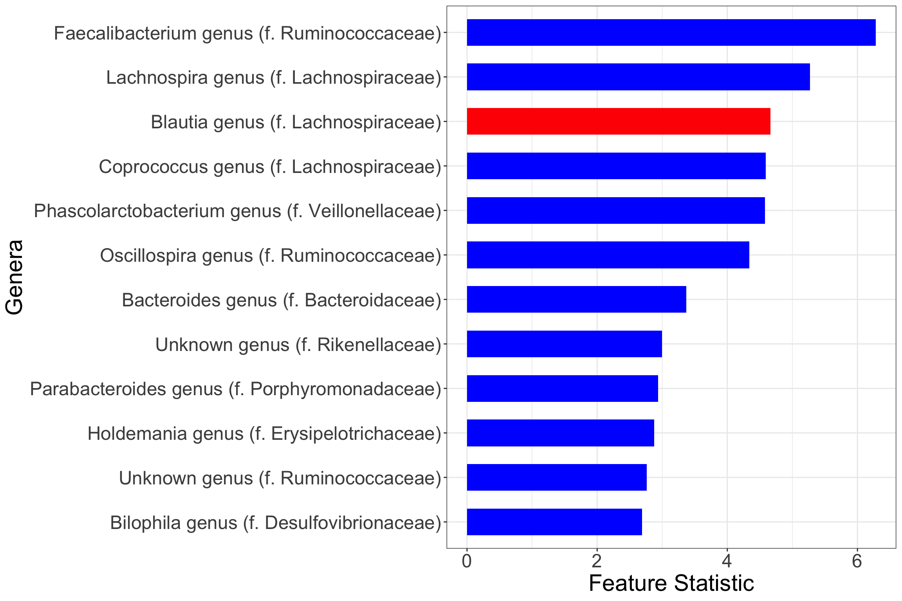

Last updated: 2024-12-16
Checks: 6 1
Knit directory: zinck-website/
This reproducible R Markdown analysis was created with workflowr (version 1.7.1). The Checks tab describes the reproducibility checks that were applied when the results were created. The Past versions tab lists the development history.
The R Markdown file has unstaged changes. To know which version of
the R Markdown file created these results, you’ll want to first commit
it to the Git repo. If you’re still working on the analysis, you can
ignore this warning. When you’re finished, you can run
wflow_publish to commit the R Markdown file and build the
HTML.
Great job! The global environment was empty. Objects defined in the global environment can affect the analysis in your R Markdown file in unknown ways. For reproduciblity it’s best to always run the code in an empty environment.
The command set.seed(20240617) was run prior to running
the code in the R Markdown file. Setting a seed ensures that any results
that rely on randomness, e.g. subsampling or permutations, are
reproducible.
Great job! Recording the operating system, R version, and package versions is critical for reproducibility.
Nice! There were no cached chunks for this analysis, so you can be confident that you successfully produced the results during this run.
Great job! Using relative paths to the files within your workflowr project makes it easier to run your code on other machines.
Great! You are using Git for version control. Tracking code development and connecting the code version to the results is critical for reproducibility.
The results in this page were generated with repository version d4297f5. See the Past versions tab to see a history of the changes made to the R Markdown and HTML files.
Note that you need to be careful to ensure that all relevant files for
the analysis have been committed to Git prior to generating the results
(you can use wflow_publish or
wflow_git_commit). workflowr only checks the R Markdown
file, but you know if there are other scripts or data files that it
depends on. Below is the status of the Git repository when the results
were generated:
Ignored files:
Ignored: .DS_Store
Ignored: analysis/.DS_Store
Untracked files:
Untracked: analysis/IBD.html
Unstaged changes:
Modified: .gitignore
Modified: analysis/CRC.Rmd
Deleted: analysis/CRC.html
Modified: analysis/Heatmaps.Rmd
Modified: analysis/IBD.Rmd
Modified: analysis/_site.yml
Modified: analysis/index.Rmd
Modified: analysis/simulation.Rmd
Note that any generated files, e.g. HTML, png, CSS, etc., are not included in this status report because it is ok for generated content to have uncommitted changes.
These are the previous versions of the repository in which changes were
made to the R Markdown (analysis/IBD.Rmd) and HTML
(docs/IBD.html) files. If you’ve configured a remote Git
repository (see ?wflow_git_remote), click on the hyperlinks
in the table below to view the files as they were in that past version.
| File | Version | Author | Date | Message |
|---|---|---|---|---|
| html | d4297f5 | ghoshstats | 2024-12-12 | Manually deploy website with existing HTML files |
| html | d404602 | Patron | 2024-06-18 | Updated IBD Analyses |
| Rmd | a67317a | Patron | 2024-06-18 | Updated IBD Analyses |
| html | ab6400d | Patron | 2024-06-18 | Build and publish the website |
| Rmd | a6c38f8 | Patron | 2024-06-18 | Add home, experiment, and simulation pages |
Out of the ten uniformly processed 16S rRNA gene sequencing studies of the IBD mucosal/stool microbiome (https://github.com/biobakery/ibd_paper/tree/paper_publication), we focus on five studies – RISK (\(430\) cases, \(201\) controls), CS PRISM (\(359\) cases, \(38\) controls), HMP2 (\(59\) cases, \(22\) controls), Pouchitis (\(308\) cases, \(45\) controls), and Mucosal IBD (\(36\) cases, \(47\) controls). Here cases indicate patients with Ulcerative Colitis (UC) or Crohn’s Disease (CD). We included all \(249\) IBD genera in our analyses.
############################################################################################
################################## IBD data genus level ####################################
load("/Users/Patron/Documents/zinck research/genera.RData") ## Loading the meta IBD studies
combined_studies <- as.data.frame(t(physeq_genera@otu_table))
study_names <- physeq_genera@sam_data[["dataset_name"]]
## RISK ##
risk_indices <- which(study_names == "RISK")
risk_otu <- combined_studies[risk_indices, ]
## CS-PRISM ##
prism_indices <- which(study_names == "CS-PRISM")
prism_otu <- combined_studies[prism_indices, ]
## HMP2 ##
HMP_indices <- which(study_names == "HMP2")
hmp_otu <- combined_studies[HMP_indices, ]
## Pouchitis ##
pouchitis_indices <- which(study_names == "Pouchitis")
pouchitis_otu <- combined_studies[pouchitis_indices, ]
## MucosalIBD ##
mi_indices <- which(study_names == "MucosalIBD")
mi_otu <- combined_studies[mi_indices, ]
metadata <- physeq_genera@sam_data
# Get the indices of the last occurrence of each unique subject_accession
latest_indices <- sapply(unique(metadata$subject_accession), function(x) {
max(which(metadata$subject_accession == x))
})
# Subset the metadata to keep only the latest samples
latest_metadata <- metadata[latest_indices, ]
study_names <- c("CS-PRISM","HMP2","MucosalIBD","Pouchitis","RISK")
meta_IBD <- latest_metadata[latest_metadata$dataset_name %in% study_names,]
# Extract row names for each study
risk_row_names <- row.names(latest_metadata[latest_metadata$dataset_name == "RISK", ])
prism_row_names <- row.names(latest_metadata[latest_metadata$dataset_name == "CS-PRISM", ])
hmp_row_names <- row.names(latest_metadata[latest_metadata$dataset_name == "HMP2", ])
mi_row_names <- row.names(latest_metadata[latest_metadata$dataset_name == "MucosalIBD", ])
pouchitis_row_names <- row.names(latest_metadata[latest_metadata$dataset_name == "Pouchitis", ])
# Subset the OTU matrices and Y vectors based on these row names
risk_otu_latest <- risk_otu[row.names(risk_otu) %in% risk_row_names, ]
prism_otu_latest <- prism_otu[row.names(prism_otu) %in% prism_row_names, ]
hmp_otu_latest <- hmp_otu[row.names(hmp_otu) %in% hmp_row_names, ]
mi_otu_latest <- mi_otu[row.names(mi_otu) %in% mi_row_names, ]
pouchitis_otu_latest <- pouchitis_otu[row.names(pouchitis_otu) %in% pouchitis_row_names, ]
combined_otu <- rbind(prism_otu_latest,hmp_otu_latest,mi_otu_latest,
pouchitis_otu_latest,risk_otu_latest)
combined_otu <- combined_otu[ match(rownames(meta_IBD), rownames(combined_otu)), ]
## To make sure samples in OTU correspond to the samples in meta
IBD_resp <- meta_IBD$disease
Y <- ifelse(IBD_resp %in% c("CD", "UC"), 1, 0)
X <- combined_otuWe train the zinck model on \(X\) with the optimal number of clusters
(\(27\)), and use the posterior
estimates of the latent parameters to generate the knockoff matrix.
fitIBD <- fit.zinck(as.matrix(X),num_clusters=27,method="ADVI",seed=1,
importance_resampling = TRUE,elbo_samples = 500,
boundary_correction = TRUE,prior_ZIGD = TRUE)
theta <- fitIBD$theta
beta <- fitIBD$beta
X_tilde <- zinck::generateKnockoff(X,theta,beta,seed=1) ## Generating the knockoff copyFitting the Random Forest model associating the augmented set of covariates with the outcome of interest, we extract the Feature Importance scores.
filter_zinck <- zinck.filter(as.matrix(X),as.matrix(X_tilde),as.factor(Y),
model="Random Forest",offset=0,seed=312)
selected_genera <- filter_zinck$selected
## Importance scores ##
W <- filter_zinck$W
## Threshold ##
T <- filter_zinck$T
Xnorm <- X / rowSums(X)
# Calculate the column sums for cases and controls
case_sums <- colMeans(Xnorm[Y == 1, which(W>=T)])
control_sums <- colMeans(Xnorm[Y == 0, which(W>=T)])
colors <- ifelse(case_sums > control_sums, "red", "blue")
# Create a data frame for plotting
data.genus <- data.frame(
impscores = sort(W[which(W >= T)], decreasing = FALSE),
name = factor(names_zinck, levels = names_zinck),
y = seq(length(names_zinck)) * 0.9,
color = colors
)
# Create the plot
plt.genus <- ggplot(data.genus) +
geom_col(aes(impscores, name, fill = color), width = 0.6) +
scale_fill_identity() +
theme_bw() +
ylab("Genera") +
xlab("Feature Statistic") +
theme(
axis.title.x = element_text(size = 22),
axis.title.y = element_text(size = 22),
axis.text.x = element_text(size = 18),
axis.text.y = element_text(size = 18)
)
print(plt.genus)
Note that the red coloured bars indicate positive marginal association between microbial relative abundance and the odds of IBD, while blue indicate negative marginal association.
sessionInfo()R version 4.1.3 (2022-03-10)
Platform: x86_64-apple-darwin17.0 (64-bit)
Running under: macOS Big Sur/Monterey 10.16
Matrix products: default
BLAS: /Library/Frameworks/R.framework/Versions/4.1/Resources/lib/libRblas.0.dylib
LAPACK: /Library/Frameworks/R.framework/Versions/4.1/Resources/lib/libRlapack.dylib
locale:
[1] en_US.UTF-8/en_US.UTF-8/en_US.UTF-8/C/en_US.UTF-8/en_US.UTF-8
attached base packages:
[1] stats graphics grDevices utils datasets methods base
other attached packages:
[1] kosel_0.0.1 phyloseq_1.38.0 rstan_2.21.8
[4] StanHeaders_2.21.0-7 ggplot2_3.4.2 knockoff_0.3.6
[7] reshape2_1.4.4 zinck_0.0.0.9000
loaded via a namespace (and not attached):
[1] nlme_3.1-162 bitops_1.0-7 matrixStats_0.63.0
[4] fs_1.6.2 rprojroot_2.0.3 GenomeInfoDb_1.30.1
[7] tools_4.1.3 bslib_0.5.0 vegan_2.6-4
[10] utf8_1.2.3 R6_2.5.1 mgcv_1.8-42
[13] DBI_1.1.3 BiocGenerics_0.40.0 colorspace_2.1-0
[16] permute_0.9-7 rhdf5filters_1.6.0 ade4_1.7-22
[19] withr_2.5.0 tidyselect_1.2.0 gridExtra_2.3
[22] prettyunits_1.1.1 processx_3.8.1 compiler_4.1.3
[25] git2r_0.32.0 glmnet_4.1-7 cli_3.6.1
[28] Biobase_2.54.0 labeling_0.4.2 sass_0.4.6
[31] scales_1.2.1 randomForest_4.7-1.1 callr_3.7.3
[34] stringr_1.5.0 digest_0.6.31 rmarkdown_2.22
[37] ordinalNet_2.12 XVector_0.34.0 pkgconfig_2.0.3
[40] htmltools_0.5.5 highr_0.10 fastmap_1.1.1
[43] rlang_1.1.1 rstudioapi_0.14 farver_2.1.1
[46] shape_1.4.6 jquerylib_0.1.4 generics_0.1.3
[49] jsonlite_1.8.5 dplyr_1.1.2 inline_0.3.19
[52] RCurl_1.98-1.12 magrittr_2.0.3 GenomeInfoDbData_1.2.7
[55] loo_2.6.0 biomformat_1.22.0 Matrix_1.5-1
[58] Rcpp_1.0.10 munsell_0.5.0 S4Vectors_0.32.4
[61] Rhdf5lib_1.16.0 fansi_1.0.4 ape_5.7-1
[64] lifecycle_1.0.3 stringi_1.7.12 whisker_0.4.1
[67] yaml_2.3.7 MASS_7.3-60 zlibbioc_1.40.0
[70] rhdf5_2.38.1 pkgbuild_1.4.2 plyr_1.8.8
[73] grid_4.1.3 parallel_4.1.3 promises_1.2.0.1
[76] crayon_1.5.2 lattice_0.21-8 Biostrings_2.62.0
[79] splines_4.1.3 multtest_2.50.0 knitr_1.43
[82] ps_1.7.5 pillar_1.9.0 ranger_0.15.1
[85] igraph_1.4.2 codetools_0.2-19 stats4_4.1.3
[88] glue_1.6.2 evaluate_0.21 data.table_1.14.8
[91] RcppParallel_5.1.7 vctrs_0.6.5 httpuv_1.6.11
[94] foreach_1.5.2 gtable_0.3.3 cachem_1.0.8
[97] xfun_0.39 later_1.3.1 survival_3.5-5
[100] tibble_3.2.1 iterators_1.0.14 IRanges_2.28.0
[103] cluster_2.1.4 workflowr_1.7.1